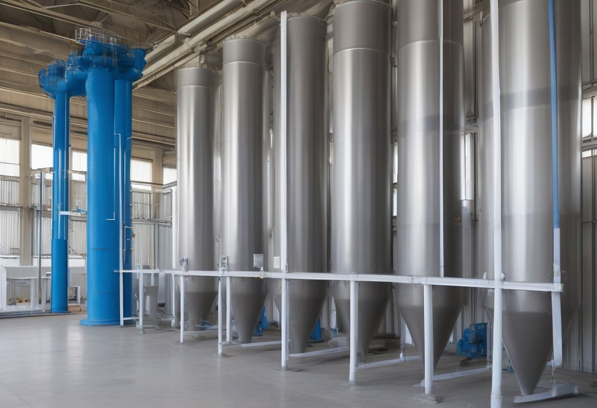
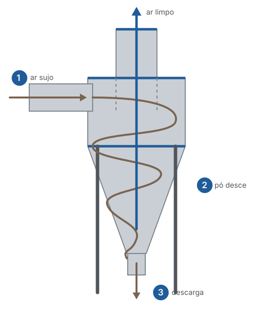
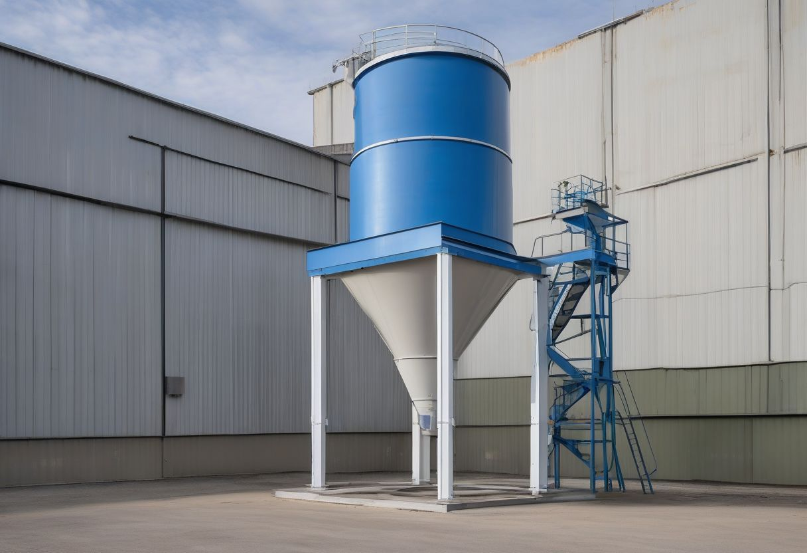
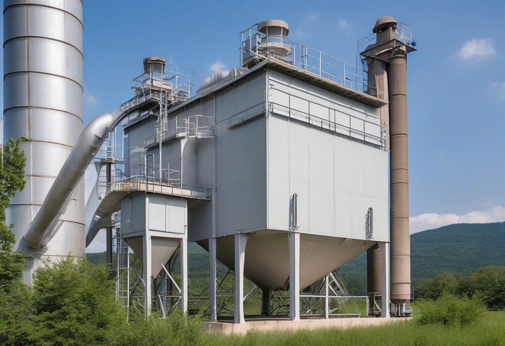
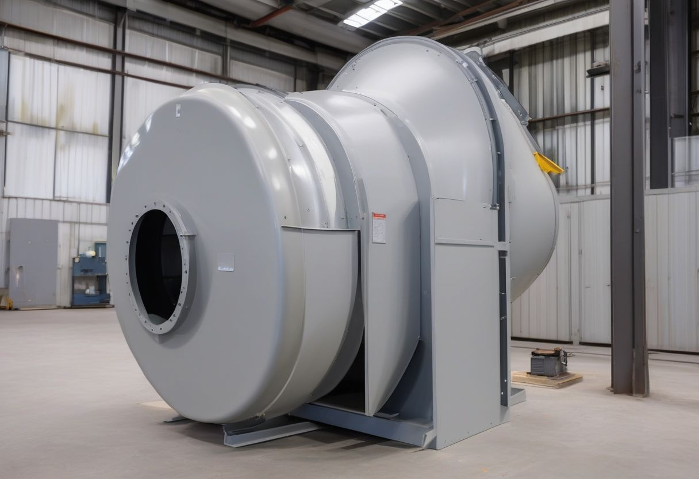
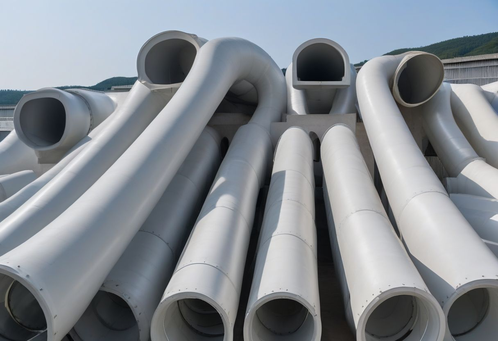

Controle de poluição do ar
Ar limpo saindo do seu processo
Fabricamos o sistema que capta, separa e descarta o pó e a fumaça da sua fábrica, dimensionado para a sua vazão.


Como um ciclone separa o pó
- 1
O ar sujo entra de lado, na parte de cima, e começa a girar.
- 2
O pó é jogado contra a parede e desce em espiral pelo cone.
- 3
No fundo, o pó cai na descarga. O ar limpo sobe pelo centro e sai pelo tubo de cima.
Pó Ar limpo
Arraste para girar
O que fabricamos

Ciclones
Separam o pó mais grosso só com o giro do ar, sem elemento filtrante para trocar.

Filtros de manga
Seguram o pó fino. Usados sozinhos ou depois de um ciclone.

Exaustores centrífugos
Puxam o ar de todo o sistema, com o rotor dimensionado para a vazão e a pressão.

Dutos e chaminés
Captação, curvas, reduções e chaminés, no diâmetro do projeto.
Onde esses equipamentos trabalham
Aplicações comuns de ciclones, filtros e exaustores.
Madeira e móveis
Serragem e pó de lixa das máquinas.
Fundição e metalurgia
Fumos, areia e pó de rebarbação.
Mineração e cimento
Pó de britagem, peneiras e transportadores.
Alimentos e ração
Farinhas e grãos em moagem e ensaque.
O que mandar no pedido
Com esses dados o orçamento sai sem idas e vindas.
- Vazão de ar, em m³/h, ou o tamanho dos pontos de captação
- Tipo de pó ou fumaça e a temperatura do gás
- Espaço disponível e uma foto do local
- Se já existe algum equipamento para trocar